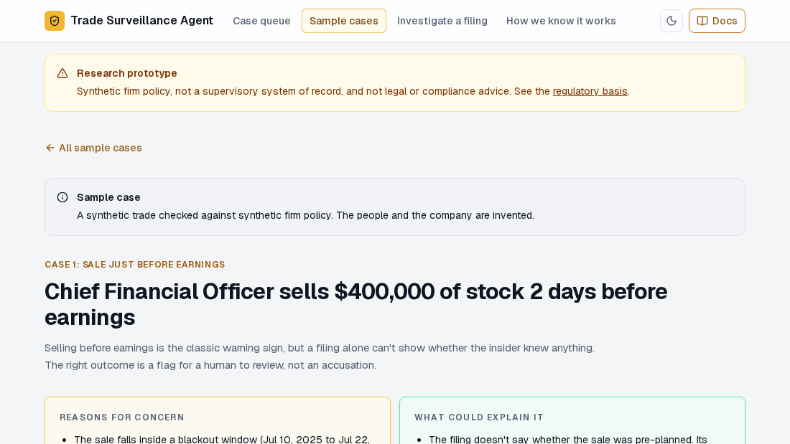

Trade Surveillance Agent — Insider-Trading Review That Shows Its Work

Executives, directors and large shareholders must publicly report their own trades within two business days. A compliance team then has to decide which filings deserve a closer look. This project is an AI investigator for that first review. It takes a real SEC Form 4 filing, gathers evidence from the insider's trading history and a firm-policy database, drafts a conclusion, and refuses to publish any claim it cannot back with retrieved evidence. The outcome is clear, flag or escalate for a human, never an accusation.
Scope note: a research prototype using public SEC data and synthetic firm policy. It is not a supervisory system of record and not legal or compliance advice. The sample cases shown in the app are synthetic trades.
Why This Project Exists
A filing on its own cannot show whether an insider knew anything. A sale just before earnings is a classic warning sign, but it may also be a pre-planned trade or a routine tax disposition. Compliance reviewers need an assistant that surfaces concerns and mitigating factors together, cites its sources, and is honest when its evidence is thin. A fluent paragraph that sounds right but is not grounded in the record is worse than no assistant at all, because it creates false confidence.
How an Investigation Runs
The pipeline is a LangGraph state machine: plan the evidence needed, check the plan in code, investigate with read-only tools, draft a finding, extract claims from the draft, judge grounding, and only then publish.
- The grounding loop is the centerpiece. The draft is decomposed into individual claims and each is checked against the evidence actually gathered. If a claim fails, the investigation returns to gather more evidence rather than quietly rewriting the answer.
- Publication is deterministic. Once grounding is evaluated, code assembles the result, so the model cannot re-word its way around a failed check.
- Concerns and exculpatory factors appear side by side. Rule hits such as a blackout-window sale sit next to factors that may explain the trade, such as the filing being on time and below firm limits.
What Is Judged by a Model and What Is Plain Code
Whether a claim is supported is judged by an LLM. Everything around that judgment is deterministic: the plan check, the exculpatory factors, a process audit (was the required evidence gathered, in a sensible order, with real citations and supported exemptions), and the reward signal for an included Gymnasium environment. In that environment and its CI gate, shortcut strategies score far below a proper investigation, which makes "did the agent actually do the work?" measurable.
A Reviewer Workflow
A case-review queue lets an analyst accept or override the agent's disposition. The decision is recorded against the run and never changes the agent's finding, so the audit trail keeps both views.
Results and Honest Limits
- The grounding check does catch weak output. In the sample case the agent escalated a synthetic CFO sale two days before earnings, and the app reports that only 2 of 4 claims were supported, two cited no evidence, and human review is required.
- Process audit improved from a real finding. The audit exposed a claim-extractor problem; after fixing it, live runs scoring zero on the audit fell from 8 of 10 to 0 of 10.
- Accuracy is not solved. Disposition accuracy is still 5 of 10 on those live runs: the model clears most cases that should be flagged. Good process does not by itself mean the right call, and the project reports that gap openly.
- Evaluation design: a canonical set gates every pull request, and recorded live-model runs are shown next to scripted policies but are not gated. A larger hand-labelled evaluation with confidence intervals has not been done.
- Status: complete and available as a public demo, with a single model provider.
Engineering Decisions Worth Noting
- Plan once, validate in code rather than trusting the model's own plan.
- Vocabulary discipline: the interface says "flag" and "escalate" rather than accusing anyone, so wording does not overclaim what the evidence supports.
- No vector store: a deliberate, documented design decision rather than a default RAG setup.
- Quality gates: lint, strict typing, import contracts, tests, an evaluation harness, documentation build, and Playwright browser tests.
Stack: LangGraph, FastAPI with server-sent events, Next.js, SQLite, pytest, mypy in strict mode, Gymnasium (development only), and MkDocs.
Who This Is For
For compliance and RegTech teams, this is a pattern for AI-assisted review that is explainable and honest about uncertainty. For AI engineering leaders, it shows how to evaluate an agent on how it worked as well as what it concluded. If you want this approach applied to your domain, let's talk.
Technical Resources
Live App View Source Code Technical Documentation Discuss a Similar Project